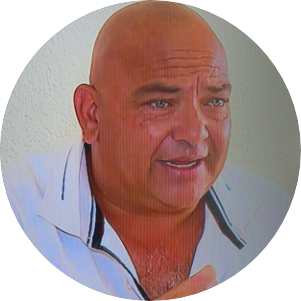
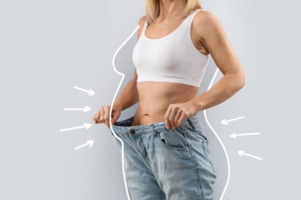
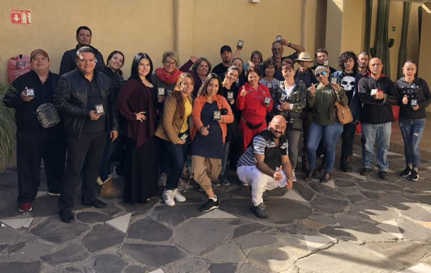
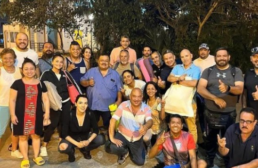
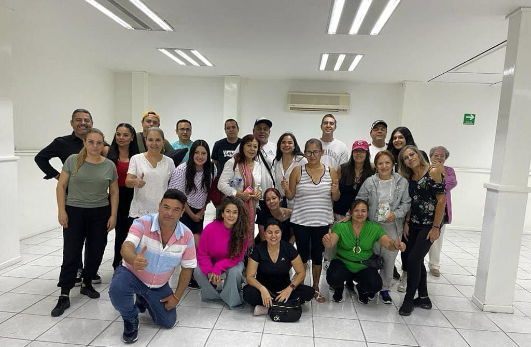
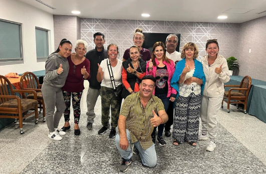
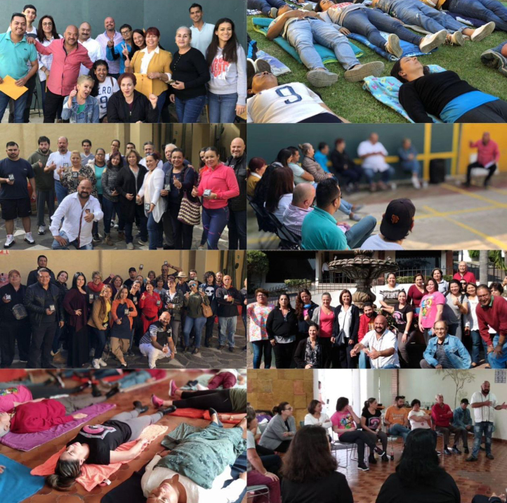
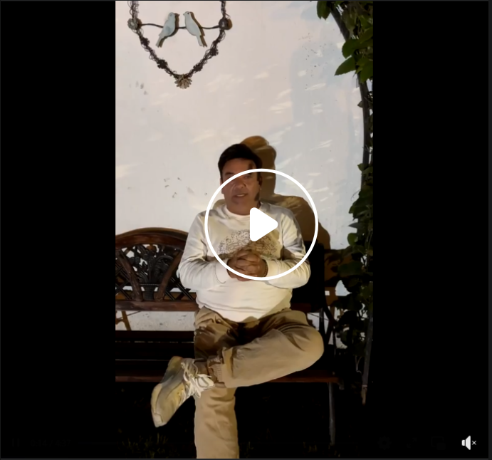

El hipnoterapeuta que ha ayudado a miles de personas a dejar de fumar
Así es como se refieren al fundador de "ES SENCILLO DEJAR DE FUMAR" quien tiene una amplia experiencia en la hipnosis clinica donde a través de sugestiones a la mente y técnicas psicológicas ha tenido un éxito exponencial, no solamente en la adicción del tabaquismo sino también en conflictos cognitivos. Oscar Alva obtuvo una formación en la institución "Amo Academic" en Florida especializada en la formación de hipnoterapeutas.
Se parte de esta gran comunidad y logra tus objetivos así como miles de personas lo han hecho.
Una terapia diseñada con duracion de una sesion de 6 horas donde se trabajara a traves de las sugestiones hipnoticas la parte conciente e inconciente de la mente
Terapia para dejar de fumar
Terapia para combatir y trabajar la gestion adecuada de las emociones por un metodo clinico.
Ansiedad
Sesiones diseñadaas para las perdidas y partidas.
Tanatología
Sesiones diseñadas para personas adictas al juego
Ludopatía
Sesiones diseñadas para personas adictas al alcohol y restructuracion cognitiva
Alcoholismo
Terapias para trabajar los diferentes niveles de depresión
Depresión
Sesion diseñada principalmente para el control de peso de manera psicologica

Control de Peso
Sesiones diseñadas a traves de tecnica de desensibilisasion sistematica y pensamientos de afrontamiento
Fobias
Sesion diseñada con tecnicas y sugestiones para el manejo del estres
Estres





El curso, cuidadosamente elaborado por expertos en salud y bienestar, ha demostrado ser una herramienta efectiva para cambiar hábitos arraigados. A través de una combinación de educación, apoyo emocional y estrategias prácticas, los participantes han logrado superar los desafíos asociados con la adicción al tabaco. Se ha convertido en un faro de esperanza para aquellos que buscan abandonar este hábito perjudicial.
Personas han dejado de fumar
Llevan años sin fumar
Sesión para dejar de fumar
El 24 de mayo cumplí 2 años!! sin fumar, excelente programa, animo para todos los que desean dejar de fumar para siempre!
Es el mejor programa para dejar de fumar
Yo tengo 2 años 4 meses sin fumar gracias a la terapia de Oscar y no sienot la necesidad de fumar y convivo con mucha gente fumadora la verdad fue una inversion bien invertida.
Un año sin fumar gracias a Oscar. Bendiciones
Desde Cuba llevo 3 años . Muy efectiva la terapia
Yo Oscar 282 días sin fumar. Muy feliz y con una calidad de vida libre de humo. Dios te bendiga. Gracias!
Muchas gracias oscar! muy recomendable fumé durante 28 años intenté miles de cosas, parches, pastillas cigarros electrónicos terapias, etc. hasta que llegué contigo pude superar este vicio! Saludos
